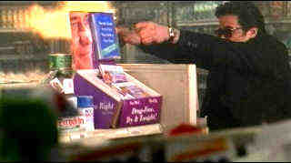

|
Grosse Pointe Blank/A-,A- |
|
Hollywood/1997/107m/WS 1.85:1 |
|
A clever idea is carried out to maximum fulfillment as hitman Martin Blank returns to his ten year high school reunion. John Cusack is terrific as the hitman with a conscience and Minnie Driver is perfection as his long lost love, now a local disc jockey. Joan Cusack has
some magic moments as Blank's efficient secretary and Dan Aykroyd manages to stay within the bounds of his character as a rival gun for hire. Even the explosions are well-timed and the shoot-outs choreographed with a nod to John Woo.
Directed with brilliant energy by George Armitage who also did the excellent Miami Blues (Hey George, where've you been. How about some more movies!) several years ago, Grosse Pointe Blank maintains a breathtaking pace and consistent sense of dark humor throughout.
 |
|
Martin takes aim. ©Miramax |
Another outstanding transfer from the Disney crew, Grosse Pointe Blank displays the a full range of detail with little or no noticeable NTSC artifacts. Colors are bright, contrast levels outstanding. The sound track, filled with a compendium of hot songs, really rocks. |
|
|
|
|

Selections from the feature archive include articles on Akira Kurosawa, Frank Darabont, Blonde Bimbos, Hollywood Street Gangs, or Vietnam: The Hollywood Pariah, and many more....

Catch the Hollywood take on Blonde Bimbos by clicking on the image above.
 
DVDPlanet is the DVD incarnation of legendary laser retailer Ken Crane's. Deep discounts and serious service.
 Direct from the corridors of the Home Theater Forum, Home Theater Talk is the newest place on the Net to discuss everything home theater. Friendly atmosphere and knowledgeable folks are the secret ingredients. Direct from the corridors of the Home Theater Forum, Home Theater Talk is the newest place on the Net to discuss everything home theater. Friendly atmosphere and knowledgeable folks are the secret ingredients.
They may be judgmental, but that's the point, isn't it. Lots of DVD reviews plus news and more.
Click on the link to visit the judge's chambers.
|